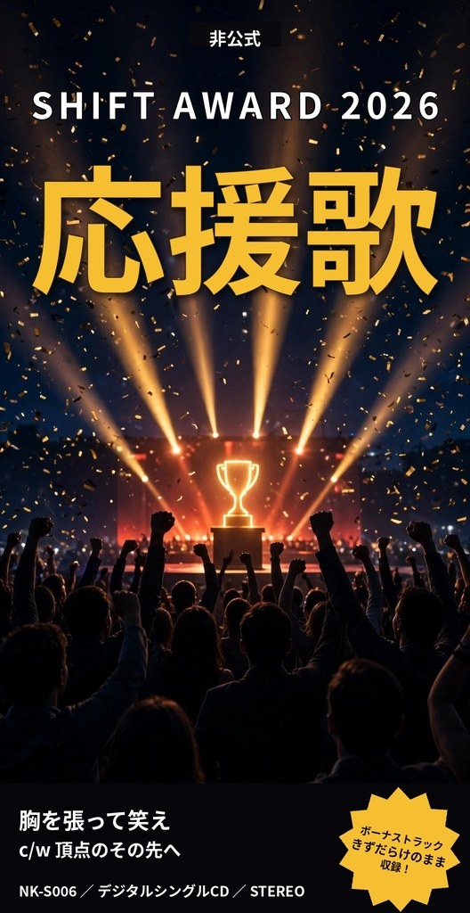
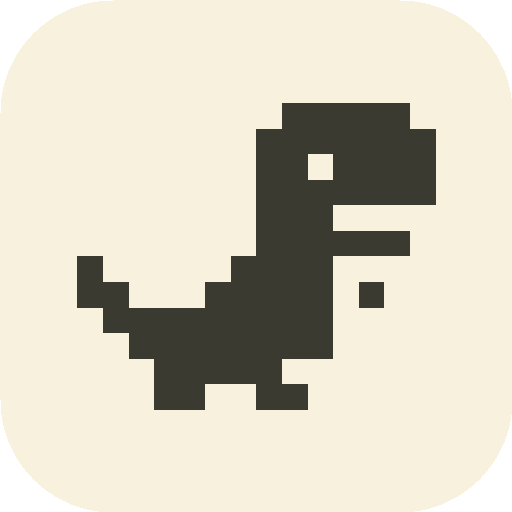
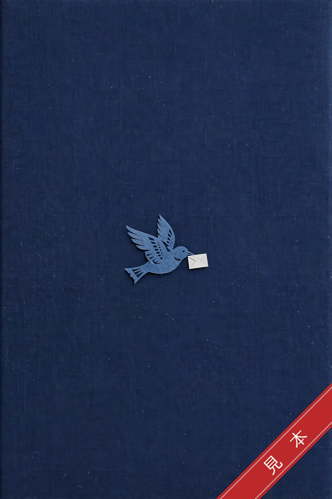
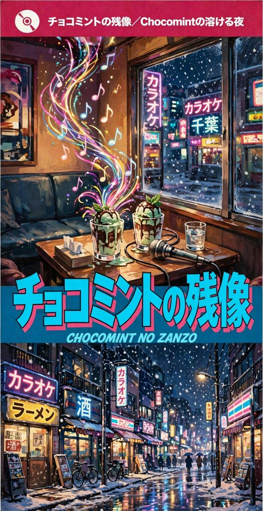
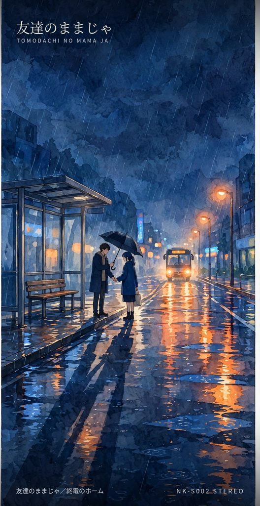
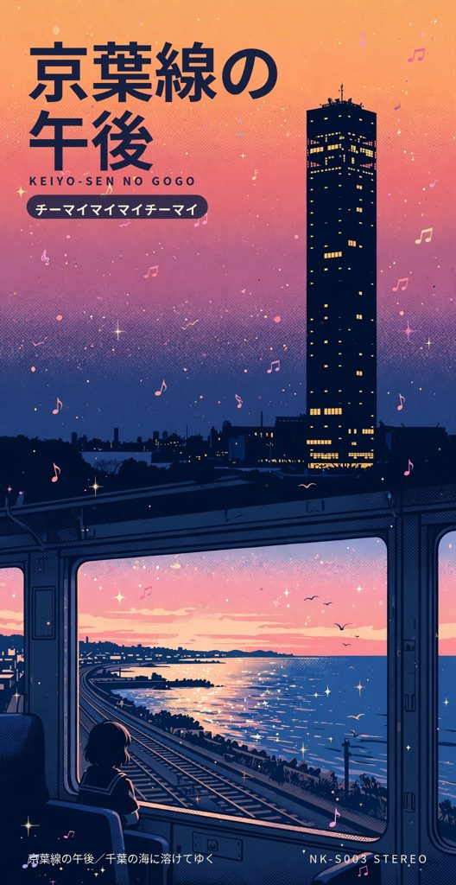
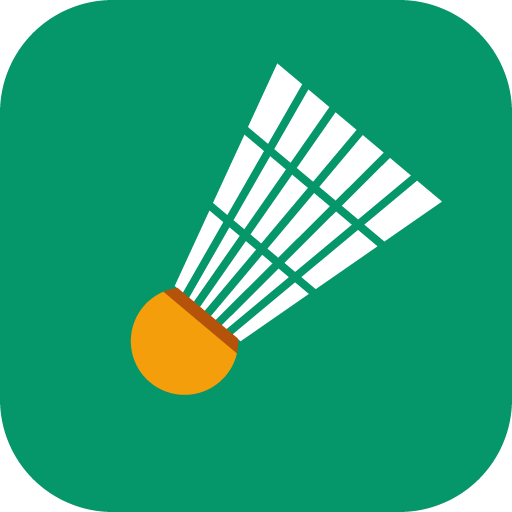

コードはAIが書き、人間は判断と責任を担う。
そんなやり方で作り切った作品を集めました。
すべてスマートフォンのブラウザで、そのまま遊べます。
※勤務時間外のプライベートな取り組みで制作したものです

SHIFT AWARD 2026を盛り上げるための非公式テーマソングです。表題曲『胸を張って笑え』、カップリング『頂点のその先へ』、ボーナストラック『きずだらけのまま』の3曲入り。挑む人へのエールを、8cmシングルCDの形にしました。
ジャケットを開く自分の子どもたちに遊ばせるために作ったゲームです。

読み進める要所で選択肢が現れ、物語が枝分かれしていくノベルゲーム集。朗読付き単行本の試作品として作ったもので、学校、図書室、カフェ――舞台の異なる短編が8作入っています。
読み始める物語も朗読も、AIで簡単に作れる時代です。作ったのは、それを「一冊の本」に仕上げる仕組みのほうです。

曲もAIで簡単に作れます。作ったのは、懐かしの8cmシングルCDのような「所有する作品」に、ジャケットや解説まで含めて仕上げる仕組みです。


終電前のバス停とホームを歌う2曲に、ボーナストラックを加えたデジタルシングルCD。ジャケットを眺めて、置いて、再生する感覚を大切にしました。
ジャケットを開く
